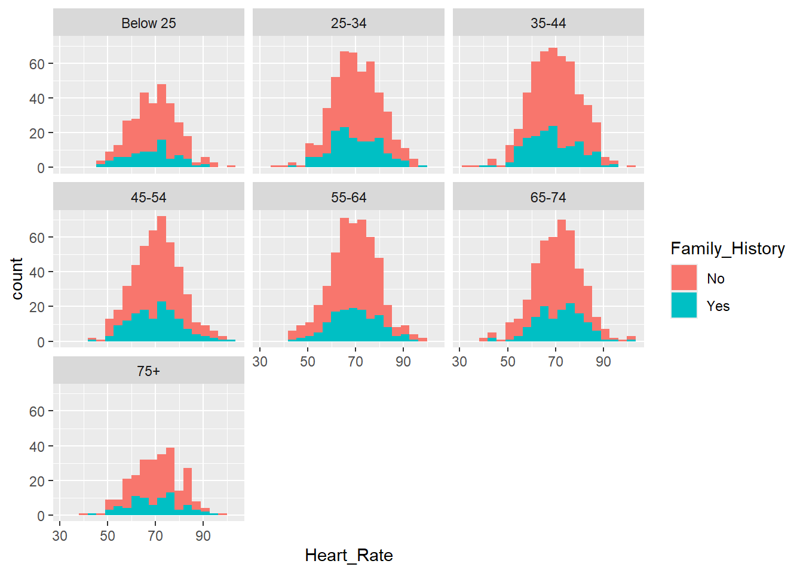
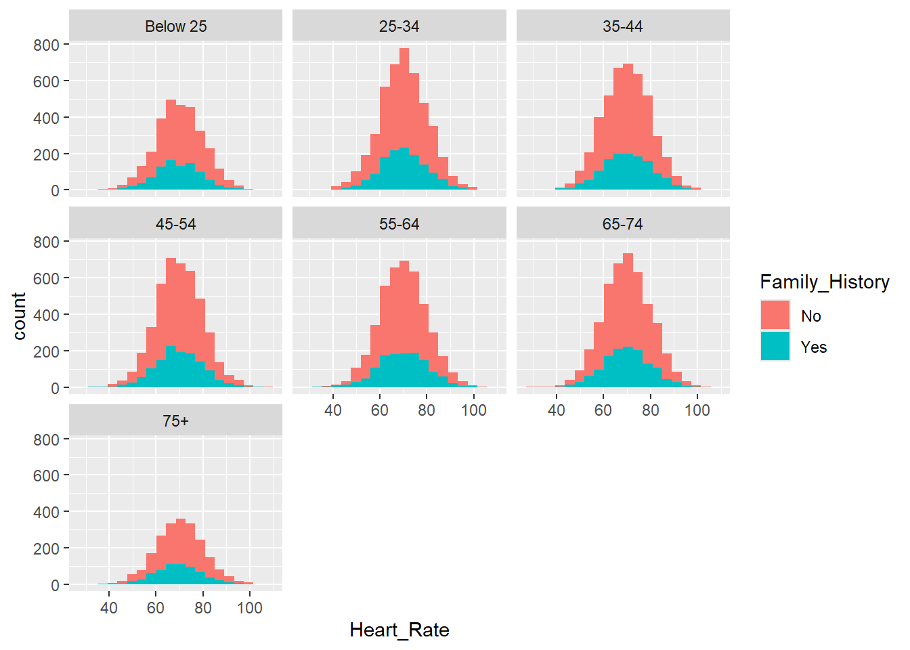
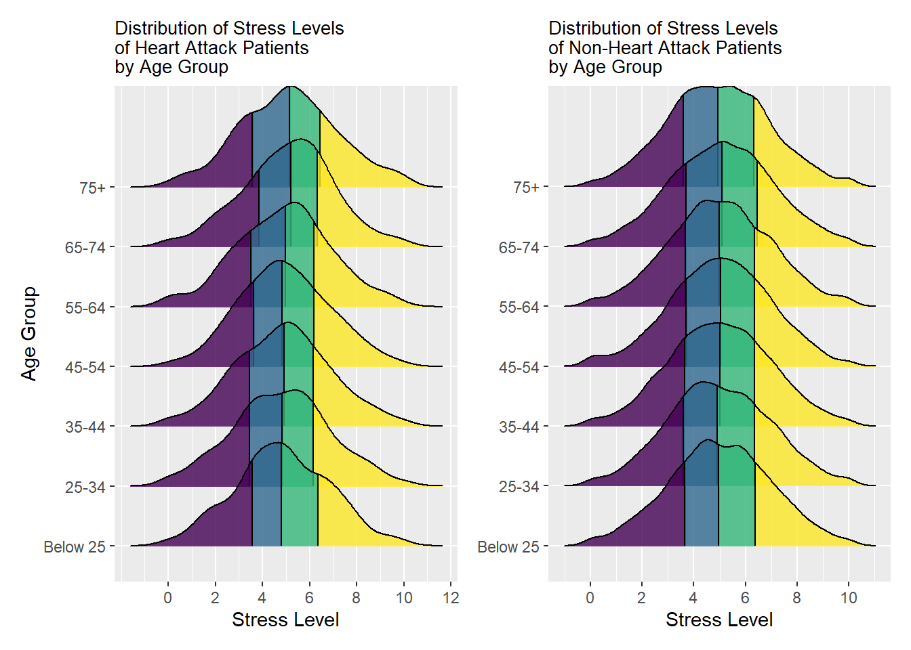
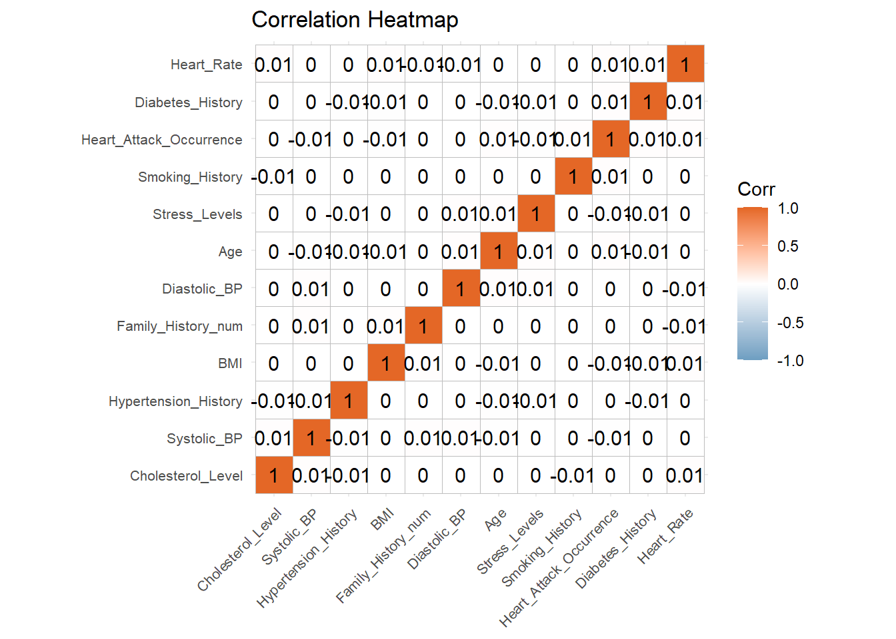
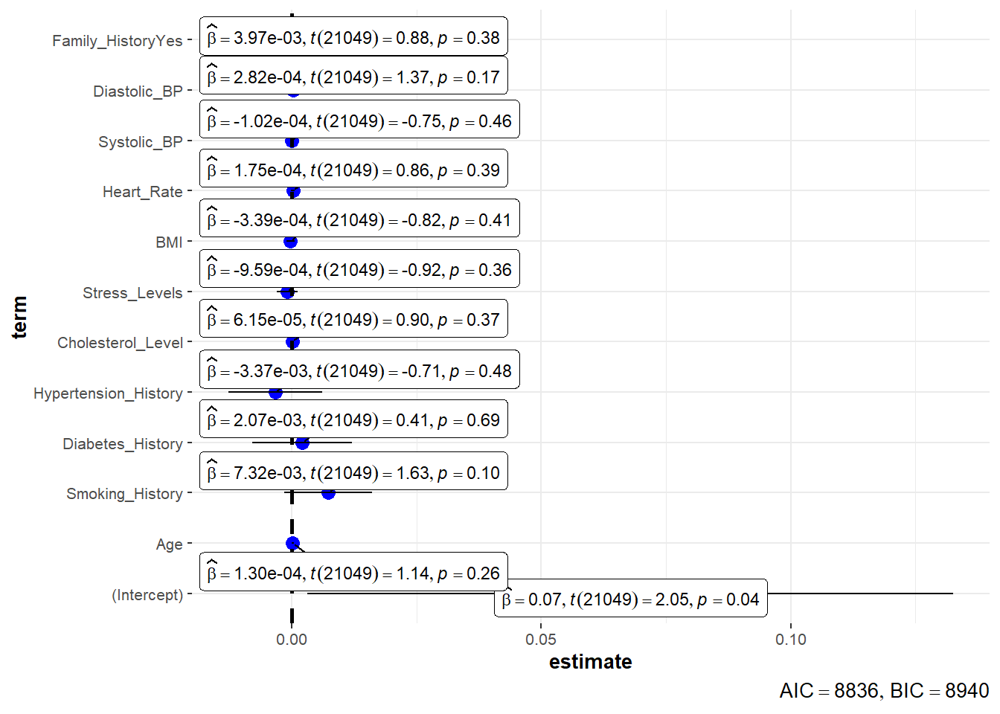
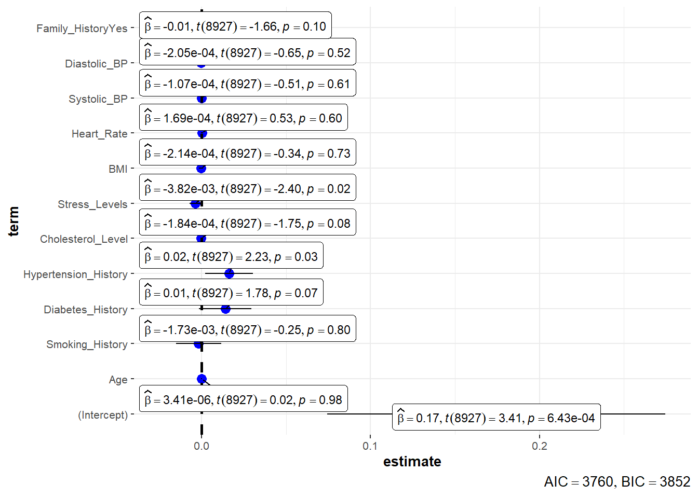

pacman::p_load(tidyverse, performance, plotly,
SmartEDA, easystats, gtsummary, ggstatsplot,
ggridges, ggdist, ggcorrplot, ggpubr)Take-Home Exercise 01
1. Introduction
Heart diseases, including heart attacks, have been the leading cause of death globally. Understanding the risk factors and trends associated with heart attacks is crucial for prevention strategies and health interventions.
This study analyses the heart attack data in Japan among youth and adult, using data visualisations and statistical insights to uncover key insights.
By examining risk factors such as lifestyles choices, age, medical conditions and family history, we aim to identify valuable insights that contribute to heart health awareness and prevention efforts.
2. Getting Started
2.1 Loading the relevant libraries
The following R packages will be used:
tidyverse: Used for data manipulation, visualisation and analysisperformance: Used to compare and visualise statistical models’ performance metricsplotly: Enables interactive and dynamic visualisationsSmartEDA: Generate summary statisticseasystats: Used for statistical analysis, which includes model fitting and visualisationgtsummary: Creates summary tables for easy interpretationggstatsplot: An extention ofggplot2with statistical visualisationggridges: Creates ridge plots to visualise distributions of dataggcorrplot: For visualising correlation matrices with heatmapsggpubr: An extention ofggplot2to create visualisation
2.2 Data source and importing data
In this study, the “Heart Attack in Japan Youth Vs Adult” data will be used. The dataset is retrieved from Kaggle.
We import the dataset, japan_heart_attack_dataset.csv, using read_csv() of readr package into R.
heart_attack <- read_csv("data/japan_heart_attack_dataset.csv")3. Data Pre-Processing
First, we get a summary and overview of the dataset.
summary(heart_attack) Age Gender Region Smoking_History
Min. :18.00 Length:30000 Length:30000 Length:30000
1st Qu.:33.00 Class :character Class :character Class :character
Median :48.00 Mode :character Mode :character Mode :character
Mean :48.49
3rd Qu.:64.00
Max. :79.00
Diabetes_History Hypertension_History Cholesterol_Level Physical_Activity
Length:30000 Length:30000 Min. : 80.02 Length:30000
Class :character Class :character 1st Qu.:179.55 Class :character
Mode :character Mode :character Median :199.77 Mode :character
Mean :199.90
3rd Qu.:220.16
Max. :336.86
Diet_Quality Alcohol_Consumption Stress_Levels BMI
Length:30000 Length:30000 Min. : 0.000 Min. : 5.58
Class :character Class :character 1st Qu.: 3.644 1st Qu.:21.63
Mode :character Mode :character Median : 4.993 Median :24.96
Mean : 5.002 Mean :25.00
3rd Qu.: 6.353 3rd Qu.:28.36
Max. :10.000 Max. :46.10
Heart_Rate Systolic_BP Diastolic_BP Family_History
Min. : 30.03 Min. : 56.23 Min. : 39.95 Length:30000
1st Qu.: 63.25 1st Qu.:109.79 1st Qu.: 73.26 Class :character
Median : 69.95 Median :119.90 Median : 80.12 Mode :character
Mean : 69.98 Mean :119.91 Mean : 80.03
3rd Qu.: 76.66 3rd Qu.:130.02 3rd Qu.: 86.76
Max. :108.78 Max. :178.77 Max. :117.67
Heart_Attack_Occurrence Extra_Column_1 Extra_Column_2
Length:30000 Min. :0.0000071 Min. :0.0000052
Class :character 1st Qu.:0.2533084 1st Qu.:0.2473606
Mode :character Median :0.5008204 Median :0.4961980
Mean :0.5019388 Mean :0.4978940
3rd Qu.:0.7505286 3rd Qu.:0.7473954
Max. :0.9999654 Max. :0.9999894
Extra_Column_3 Extra_Column_4 Extra_Column_5
Min. :0.0000227 Min. :0.0000934 Min. :0.0001051
1st Qu.:0.2483093 1st Qu.:0.2522110 1st Qu.:0.2518029
Median :0.4976104 Median :0.4976175 Median :0.5019871
Mean :0.4981949 Mean :0.5005952 Mean :0.5014100
3rd Qu.:0.7476807 3rd Qu.:0.7505662 3rd Qu.:0.7536569
Max. :0.9999694 Max. :0.9999869 Max. :0.9999949
Extra_Column_6 Extra_Column_7 Extra_Column_8
Min. :0.0000531 Min. :0.0000678 Min. :0.0000449
1st Qu.:0.2559989 1st Qu.:0.2482839 1st Qu.:0.2509790
Median :0.5017726 Median :0.4988157 Median :0.4985698
Mean :0.5027631 Mean :0.4980753 Mean :0.5003557
3rd Qu.:0.7511886 3rd Qu.:0.7456378 3rd Qu.:0.7507293
Max. :0.9998892 Max. :0.9999900 Max. :0.9999300
Extra_Column_9 Extra_Column_10 Extra_Column_11
Min. :0.0000305 Min. :0.0000133 Min. :0.0000008
1st Qu.:0.2502452 1st Qu.:0.2484256 1st Qu.:0.2538092
Median :0.4984491 Median :0.5031040 Median :0.5067589
Mean :0.5002292 Mean :0.5010694 Mean :0.5044949
3rd Qu.:0.7512186 3rd Qu.:0.7522686 3rd Qu.:0.7556257
Max. :0.9999852 Max. :0.9999928 Max. :0.9999578
Extra_Column_12 Extra_Column_13 Extra_Column_14
Min. :0.0000713 Min. :0.0000204 Min. :0.0000025
1st Qu.:0.2505341 1st Qu.:0.2473108 1st Qu.:0.2482152
Median :0.5038609 Median :0.5041162 Median :0.4943841
Mean :0.5008624 Mean :0.5004557 Mean :0.4976507
3rd Qu.:0.7511780 3rd Qu.:0.7497094 3rd Qu.:0.7456212
Max. :0.9999484 Max. :0.9999451 Max. :0.9999779
Extra_Column_15
Min. :0.0000241
1st Qu.:0.2482573
Median :0.5009406
Mean :0.4999634
3rd Qu.:0.7487379
Max. :0.9999913 We exclude the extra columns provided in the dataset, that are not needed for this analysis.
heart_attack <- heart_attack[, 1:17]Next, we check for duplicated values and missing values. There are no duplicated and missing values.
# Check for duplicated values
heart_attack[duplicated(heart_attack),]# A tibble: 0 × 17
# ℹ 17 variables: Age <dbl>, Gender <chr>, Region <chr>, Smoking_History <chr>,
# Diabetes_History <chr>, Hypertension_History <chr>,
# Cholesterol_Level <dbl>, Physical_Activity <chr>, Diet_Quality <chr>,
# Alcohol_Consumption <chr>, Stress_Levels <dbl>, BMI <dbl>,
# Heart_Rate <dbl>, Systolic_BP <dbl>, Diastolic_BP <dbl>,
# Family_History <chr>, Heart_Attack_Occurrence <chr># Check for missing values
any(is.na(heart_attack))[1] FALSEFor the analysis, we encode the Heart_Attack_Occurrence variable as 1 for “Yes”, and 0 for “No”.
heart_attack$Heart_Attack_Occurrence <-
ifelse(heart_attack$Heart_Attack_Occurrence == "Yes",1,0)heart_attack$Smoking_History <-
ifelse(heart_attack$Smoking_History == "Yes",1,0)
heart_attack$Diabetes_History <-
ifelse(heart_attack$Diabetes_History == "Yes",1,0)
heart_attack$Hypertension_History <-
ifelse(heart_attack$Hypertension_History == "Yes",1,0)
heart_attack$Family_History_num <-
ifelse(heart_attack$Family_History == "Yes",1,0)
heart_attack# A tibble: 30,000 × 18
Age Gender Region Smoking_History Diabetes_History Hypertension_History
<dbl> <chr> <chr> <dbl> <dbl> <dbl>
1 18 Male Urban 1 0 1
2 18 Male Rural 0 0 1
3 18 Female Urban 0 0 1
4 18 Male Urban 0 0 0
5 18 Male Urban 1 0 0
6 18 Male Urban 0 0 0
7 18 Male Urban 0 1 0
8 18 Male Rural 0 0 0
9 18 Male Urban 0 0 0
10 18 Female Urban 1 0 0
# ℹ 29,990 more rows
# ℹ 12 more variables: Cholesterol_Level <dbl>, Physical_Activity <chr>,
# Diet_Quality <chr>, Alcohol_Consumption <chr>, Stress_Levels <dbl>,
# BMI <dbl>, Heart_Rate <dbl>, Systolic_BP <dbl>, Diastolic_BP <dbl>,
# Family_History <chr>, Heart_Attack_Occurrence <dbl>,
# Family_History_num <dbl>
Below 25 25-34 35-44 45-54 55-64 65-74 75+
3320 4946 4905 4751 4749 4890 2439 heart_attack$Age_Group <- cut(heart_attack$Age,
breaks = c(0, 25, 35, 45, 55, 65, 75, Inf),
labels = c("Below 25", "25-34", "35-44",
"45-54", "55-64", "65-74", "75+"),
right = FALSE)Let’s take another look at the dataset summary.
Descriptions Value
1 Sample size (nrow) 30000
2 No. of variables (ncol) 19
3 No. of numeric/interger variables 12
4 No. of factor variables 1
5 No. of text variables 6
6 No. of logical variables 0
7 No. of identifier variables 4
8 No. of date variables 0
9 No. of zero variance variables (uniform) 0
10 %. of variables having complete cases 100% (19)
11 %. of variables having >0% and <50% missing cases 0% (0)
12 %. of variables having >=50% and <90% missing cases 0% (0)
13 %. of variables having >=90% missing cases 0% (0) Index Variable_Name Variable_Type Sample_n Missing_Count
1 1 Age numeric 30000 0
2 2 Gender character 30000 0
3 3 Region character 30000 0
4 4 Smoking_History numeric 30000 0
5 5 Diabetes_History numeric 30000 0
6 6 Hypertension_History numeric 30000 0
7 7 Cholesterol_Level numeric 30000 0
8 8 Physical_Activity character 30000 0
9 9 Diet_Quality character 30000 0
10 10 Alcohol_Consumption character 30000 0
11 11 Stress_Levels numeric 30000 0
12 12 BMI numeric 30000 0
13 13 Heart_Rate numeric 30000 0
14 14 Systolic_BP numeric 30000 0
15 15 Diastolic_BP numeric 30000 0
16 16 Family_History character 30000 0
17 17 Heart_Attack_Occurrence numeric 30000 0
18 18 Family_History_num numeric 30000 0
19 19 Age_Group factor 30000 0
Per_of_Missing No_of_distinct_values
1 0 62
2 0 2
3 0 2
4 0 2
5 0 2
6 0 2
7 0 30000
8 0 3
9 0 3
10 0 4
11 0 29613
12 0 30000
13 0 30000
14 0 29999
15 0 30000
16 0 2
17 0 2
18 0 2
19 0 7heart_attack %>%
ExpData(type = 1)
heart_attack %>%
ExpData(type = 2)4. Exploratory Data Analysis
4.1. Distribution of Heart Rate by Age Group
Histograms of the heart rates across age groups is created to visualise the distribution of heart rates.
Firstly, the filter() function is used to create subsets of datasets by the Heart_Attack_Occurrence.
Then, ggplot() and geom_histogram() is used to create histogram.
Lastly, facet_wrap() is used to create multiple faceted plots. Each data subset is split into multiple panels by age groups.
heart_attack_1 <- heart_attack %>% filter(Heart_Attack_Occurrence == 1)
heart_attack_0 <- heart_attack %>% filter(Heart_Attack_Occurrence == 0)
ggplot(data = heart_attack_1,
aes(x = Heart_Rate, fill = Family_History)) +
geom_histogram(bins=20) +
facet_wrap(~ Age_Group)
ggplot(data = heart_attack_0,
aes(x = Heart_Rate, fill = Family_History)) +
geom_histogram(bins=20) +
facet_wrap(~ Age_Group)Observations
Based on the plot above, the heart rates of non-heart attack patients remain consistent across all age groups, peaking at around 70 and following a normal distribution.
There is a larger proportion of heart attack patients do not have a family history of the condition.
In most age groups, the heart rates of heart attack patients also follow a normal distribution, with the peak ranging between 60 and 80. The heart rates among patients with family history tend to be more widely distributed in general.
In the 75+ age group, the distribution is more skewed toward higher heart rates, indicating an increased heart rate in older adults experiencing heart attacks.
4.2. Distribution of Stress Levels by Age Group
A ridgeline plot is created to visualise the distributions of stress levels across all age groups for heart attack and non-heart attack patients.
ggplot() and stat_density_ridges() are used to create the ridgeline plot, showing the quantile lines.
2 separate ridgeline plots are created, for the heart attack and non-heart attack group respective. The plots are joined in a single visualisation by simply adding them together, i.e. p1 + p2.

p1 <- ggplot(heart_attack_1,
aes(x = Stress_Levels,
y = Age_Group,
fill = factor(stat(quantile)))) +
stat_density_ridges(geom = "density_ridges_gradient",
calc_ecdf = TRUE,
quantile_lines = TRUE,
quantiles = 4) +
scale_fill_viridis_d(alpha = 0.8) +
xlab("Stress Level") + ylab("Age Group") +
scale_x_continuous(breaks = seq(0, 12, by = 2)) +
theme(plot.title = element_text(size = 10),
legend.position = "none")+
ggtitle(label = "Distribution of Stress Levels\nof Heart Attack Patients\nby Age Group")p2 <- ggplot(heart_attack_0,
aes(x = Stress_Levels,
y = Age_Group,
fill = factor(stat(quantile)))) +
stat_density_ridges(geom = "density_ridges_gradient",
calc_ecdf = TRUE,
quantile_lines = TRUE,
quantiles = 4) +
scale_fill_viridis_d(alpha = 0.8) +
xlab("Stress Level") +
scale_x_continuous(breaks = seq(0, 12, by = 2)) +
theme(plot.title = element_text(size = 10),
legend.position = "none",
axis.title.y = element_blank())+
ggtitle(label = "Distribution of Stress Levels\nof Non-Heart Attack Patients\nby Age Group")p1 + p2Observations
Based on the plot, we can see that the stress levels for both heart attack and non-heart attack patients follow a normal distribution across all age groups.
The distribution of stress levels for heart attack patients suggest that they generally experience higher stress levels on average compared to non-heart attack patients. Patients in the age group of 35-44, 45-54 and 65-74 have higher stress levels, with peaks between 5 and 6 as indicated by the quantile lines.
Further research in this area could explore the underlying source of stress, such as occupational, economic or social pressures, and how these factors contribute to risks of heart attack.
4.3. Check for Correlation
We check the correlation among all continuous variables. First, we select the numeric variables from the heart_attack dataset using select(where(is.numeric)). Next, we use the cor() function to create the correlation matrix. Then, we use ggcorrplot() to visualise the correlation matrix in a heatmap.
heart_attack_cor <- heart_attack %>%
select(where(is.numeric)) heart_attack_cormatrix <- cor(heart_attack_cor, use = "complete.obs")
ggcorrplot(heart_attack_cormatrix,
method = "square",
lab = TRUE,
title = "Correlation Heatmap",
hc.order = TRUE,
colors = c("#6D9EC1", "white", "#E46726")) +
theme(axis.text.y = element_text(size = 8),
axis.text.x = element_text(size = 8))Observations
We observe low correlation between all the variables, as the correlation coefficient between any 2 variables are close to 0. This suggests that there is little to no linear relationship between them.
The variables may act independently in contributing to the heart attack occurrence, and multiple factors could be at play without one directly influencing another in a linear fashion.
4.4 Significant Factors that Affects Heart Attack
We want to examine the factors that influence heart attacks based on region. In the dataset, the Region variable contains of 2 values: Urban and Rural.
First, we create subsets of the heart_attack dataset by region, using the filter() function.
Next, we fit the variables into a logistic regression model using glm(), as some variables are categorical.
Then, we check for collinearity using the check_collinearity() function.
Lastly, we use ggcoefstats() to visualise the model coefficients from the regression analysis and identify factors influencing heart attack occurrence in each region.
heart_attack_urban <- heart_attack %>% filter(Region == "Urban")
heart_attack_rural <- heart_attack %>% filter(Region == "Rural")Urban Region
Call: glm(formula = Heart_Attack_Occurrence ~ Age + Smoking_History +
Diabetes_History + Hypertension_History + Cholesterol_Level +
Stress_Levels + BMI + Heart_Rate + Systolic_BP + Diastolic_BP +
Family_History, data = heart_attack_urban)
Coefficients:
(Intercept) Age Smoking_History
6.788e-02 1.304e-04 7.322e-03
Diabetes_History Hypertension_History Cholesterol_Level
2.065e-03 -3.368e-03 6.146e-05
Stress_Levels BMI Heart_Rate
-9.587e-04 -3.391e-04 1.754e-04
Systolic_BP Diastolic_BP Family_HistoryYes
-1.022e-04 2.817e-04 3.967e-03
Degrees of Freedom: 21060 Total (i.e. Null); 21049 Residual
Null Deviance: 1875
Residual Deviance: 1874 AIC: 8836model_urban <- glm(Heart_Attack_Occurrence ~ Age + Smoking_History +
Diabetes_History + Hypertension_History +
Cholesterol_Level + Stress_Levels + BMI +
Heart_Rate + Systolic_BP + Diastolic_BP + Family_History,
data = heart_attack_urban)# Check for Multicollinearity
Low Correlation
Term VIF VIF 95% CI Increased SE Tolerance
Age 1.00 [1.00, 16658.58] 1.00 1.00
Smoking_History 1.00 [1.00, Inf] 1.00 1.00
Diabetes_History 1.00 [1.00, 1.25e+05] 1.00 1.00
Hypertension_History 1.00 [1.00, 4.07e+08] 1.00 1.00
Cholesterol_Level 1.00 [1.00, 2.35e+08] 1.00 1.00
Stress_Levels 1.00 [1.00, 9.25e+12] 1.00 1.00
BMI 1.00 [1.00, 6.94e+08] 1.00 1.00
Heart_Rate 1.00 [1.00, 30413.74] 1.00 1.00
Systolic_BP 1.00 [1.00, 6.47e+05] 1.00 1.00
Diastolic_BP 1.00 [1.00, Inf] 1.00 1.00
Family_History 1.00 [1.00, 7.06e+11] 1.00 1.00
Tolerance 95% CI
[0.00, 1.00]
[0.00, 1.00]
[0.00, 1.00]
[0.00, 1.00]
[0.00, 1.00]
[0.00, 1.00]
[0.00, 1.00]
[0.00, 1.00]
[0.00, 1.00]
[0.00, 1.00]
[0.00, 1.00]The VIF values for all variables are low, indicating that the variables have no strong intercorrelation.
check_collinearity(model_urban)
ggcoefstats(model_urban,
output = "plot")Rural Region
Call: glm(formula = Heart_Attack_Occurrence ~ Age + Smoking_History +
Diabetes_History + Hypertension_History + Cholesterol_Level +
Stress_Levels + BMI + Heart_Rate + Systolic_BP + Diastolic_BP +
Family_History, data = heart_attack_rural)
Coefficients:
(Intercept) Age Smoking_History
1.744e-01 3.406e-06 -1.725e-03
Diabetes_History Hypertension_History Cholesterol_Level
1.408e-02 1.619e-02 -1.839e-04
Stress_Levels BMI Heart_Rate
-3.820e-03 -2.142e-04 1.686e-04
Systolic_BP Diastolic_BP Family_HistoryYes
-1.071e-04 -2.055e-04 -1.141e-02
Degrees of Freedom: 8938 Total (i.e. Null); 8927 Residual
Null Deviance: 796.6
Residual Deviance: 794.7 AIC: 3760model_rural <- glm(Heart_Attack_Occurrence ~ Age + Smoking_History +
Diabetes_History + Hypertension_History +
Cholesterol_Level + Stress_Levels + BMI +
Heart_Rate + Systolic_BP + Diastolic_BP + Family_History,
data = heart_attack_rural)# Check for Multicollinearity
Low Correlation
Term VIF VIF 95% CI Increased SE Tolerance
Age 1.00 [1.00, 8.49e+11] 1.00 1.00
Smoking_History 1.00 [1.00, Inf] 1.00 1.00
Diabetes_History 1.00 [1.00, 5.25e+06] 1.00 1.00
Hypertension_History 1.00 [1.00, 2.70e+06] 1.00 1.00
Cholesterol_Level 1.00 [1.00, 3.25e+07] 1.00 1.00
Stress_Levels 1.00 [1.00, 8.83e+06] 1.00 1.00
BMI 1.00 [1.00, 3.87e+12] 1.00 1.00
Heart_Rate 1.00 [1.00, 53.24] 1.00 1.00
Systolic_BP 1.00 [1.00, 1.22e+06] 1.00 1.00
Diastolic_BP 1.00 [1.00, 3001.62] 1.00 1.00
Family_History 1.00 [1.00, Inf] 1.00 1.00
Tolerance 95% CI
[0.00, 1.00]
[0.00, 1.00]
[0.00, 1.00]
[0.00, 1.00]
[0.00, 1.00]
[0.00, 1.00]
[0.00, 1.00]
[0.02, 1.00]
[0.00, 1.00]
[0.00, 1.00]
[0.00, 1.00]The VIF values for all variables are low, indicating that the variables have no strong intercorrelation.
check_collinearity(model_rural)
ggcoefstats(model_rural,
output = "plot")Observations
In the rural subset, the significant predictors of heart attack occurrence at 10% level of significance are:
Family history
Diabetes history
Hypertension history
Cholesterol history
Stress levels
In rural areas, family history seems to have significant influence on the heart attack occurrence. Additionally, chronic conditions like diabetes and hypertension are key contributors to heart attack risk. Cholesterol level indicates that dietary habits in rural areas may be a contributing risk factor. Lastly, stress levels that potentially arising from psychological and social pressures may also play a role.
In urban areas, age is the only variable significantly associated with heart attack occurrence at 10% level of significance. This suggests that in the urban population, age has a stronger influence on heart attack occurrence than other factors, based on the logistic regression analysis.
Finally, we build a model using only the significant factors from the rural subset, applying the logistic regression model with the glm() function.
model_rural_significant <- glm(Heart_Attack_Occurrence ~ Family_History + Diabetes_History +
Hypertension_History + Cholesterol_Level + Stress_Levels,
data = heart_attack_rural)
model_rural_significant
Call: glm(formula = Heart_Attack_Occurrence ~ Family_History + Diabetes_History +
Hypertension_History + Cholesterol_Level + Stress_Levels,
data = heart_attack_rural)
Coefficients:
(Intercept) Family_HistoryYes Diabetes_History
0.1510521 -0.0114698 0.0141623
Hypertension_History Cholesterol_Level Stress_Levels
0.0161724 -0.0001828 -0.0038239
Degrees of Freedom: 8938 Total (i.e. Null); 8933 Residual
Null Deviance: 796.6
Residual Deviance: 794.8 AIC: 3749tbl_regression(model_rural_significant, intercept = TRUE)| Characteristic | Beta | 95% CI1 | p-value |
|---|---|---|---|
| (Intercept) | 0.15 | 0.11, 0.20 | <0.001 |
| Family_History | |||
| No | — | — | |
| Yes | -0.01 | -0.02, 0.00 | 0.10 |
| Diabetes_History | 0.01 | 0.00, 0.03 | 0.073 |
| Hypertension_History | 0.02 | 0.00, 0.03 | 0.026 |
| Cholesterol_Level | 0.00 | 0.00, 0.00 | 0.082 |
| Stress_Levels | 0.00 | -0.01, 0.00 | 0.016 |
| 1 CI = Confidence Interval | |||